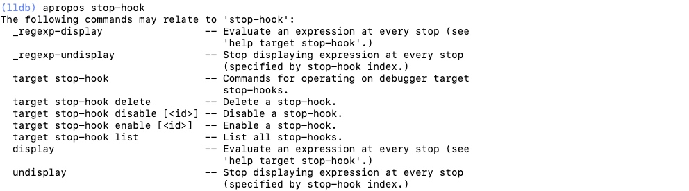
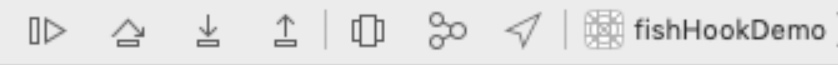

<!doctype html>
<html class="no-js" lang="en">
  <head>
    <meta charset="utf-8" />
    <meta name="viewport" content="width=device-width, initial-scale=1.0" />
    <title>
    
  调试&&测试 - ACEfish-Blog
  
  </title>
  
  
  <link href="atom.xml" rel="alternate" title="ACEfish-Blog" type="application/atom+xml">
    <link rel="stylesheet" href="asset/css/foundation.min.css" />
    <link rel="stylesheet" href="asset/css/docs.css" />
    <script src="asset/js/vendor/modernizr.js"></script>
    <script src="asset/js/vendor/jquery.js"></script>
  <script src="asset/highlightjs/highlight.pack.js"></script>
  <link href="asset/highlightjs/styles/github.css" media="screen, projection" rel="stylesheet" type="text/css">
  <script>hljs.initHighlightingOnLoad();</script>
<script type="text/javascript">
  function before_search(){
    var searchVal = 'site:acefish.github.io ' + document.getElementById('search_input').value;
    document.getElementById('search_q').value = searchVal;
    return true;
  }
</script>
  </head>
  <body class="antialiased hide-extras">
    
    <div class="marketing off-canvas-wrap" data-offcanvas>
      <div class="inner-wrap">


<nav class="top-bar docs-bar hide-for-small" data-topbar>


  <section class="top-bar-section">
  <div class="row">
      <div style="position: relative;width:100%;"><div style="position: absolute; width:100%;">
        <ul id="main-menu" class="left">
        
        <li id=""><a target="_self" href="index.html">Home</a></li>
        
        <li id=""><a target="_self" href="archives.html">Archives</a></li>
        
        </ul>

        <ul class="right" id="search-wrap">
          <li>
<form target="_blank" onsubmit="return before_search();" action="http://google.com/search" method="get">
    <input type="hidden" id="search_q" name="q" value="" />
    <input tabindex="1" type="search" id="search_input"  placeholder="Search"/>
</form>
</li>
          </ul>
      </div></div>
  </div>
  </section>

</nav>

        <nav class="tab-bar show-for-small">
  <a href="javascript:void(0)" class="left-off-canvas-toggle menu-icon">
    <span> &nbsp; ACEfish-Blog</span>
  </a>
</nav>

<aside class="left-off-canvas-menu">
      <ul class="off-canvas-list">
        
        <li><a target="_self" href="index.html">Home</a></li>
        
        <li><a target="_self" href="archives.html">Archives</a></li>
        

    <li><label>Categories</label></li>

        
            <li><a href="iOS%20%E5%BC%80%E5%8F%91%E6%A8%A1%E5%9D%97%E7%9F%A5%E8%AF%86.html">iOS 开发模块知识</a></li>
        
            <li><a href="Swift.html">Swift初学笔记</a></li>
        
            <li><a href="Computer-programming.html">计算机编程</a></li>
        
            <li><a href="iOSDevelop.html">iOSDevelop</a></li>
        
            <li><a href="JavaScript%E5%AD%A6%E4%B9%A0%E7%AC%94%E8%AE%B0.html">JavaScript学习笔记</a></li>
        
            <li><a href="React-Native.html">React-Native</a></li>
        
            <li><a href="Python.html">Python</a></li>
         

      </ul>
    </aside>

<a class="exit-off-canvas" href="#"></a>


        <section id="main-content" role="main" class="scroll-container">
        
       

 <script type="text/javascript">
	$(function(){
		$('#menu_item_index').addClass('is_active');
	});
</script>
<div class="row">
	<div class="large-8 medium-8 columns">
		<div class="markdown-body home-categories">
		
			<div class="article">
                <a class="clearlink" href="15541740415551.html">
                
                  <h1>LLDB</h1>
                  <div class="a-content">
                      
                      <div class="a-content-text">
                        
                        	<p>学习自 <a href="https://juejin.im/post/5c8ca84ce51d456f43189dbd">LLDB 知多少</a></p>

<p>LLDB是一个有着REPL的特性和C++、Python插件的开源调试器<br/>
LLDB是下一代高性能调试器。 它由一组可重用的组件构建，可以高度利用较大的LLVM项目中的现有库，例如Clang表达式解析器和LLVM反汇编程序。<br/>
LLDB是Mac OS X上Xcode的默认调试器，支持在桌面和iOS设备和模拟器上调试C，Objective-C和C ++。</p>

<h2 id="toc_0">LLDB命令结构</h2>

<p>LLDB命令通用结构:</p>

<pre><code class="language-c">&lt;command&gt;[&lt;subcommand&gt; [&lt;subcommand&gt;...]] &lt;action&gt; [-options [option-value]] [argument [argument...]]
</code></pre>

<ul>
<li>commond、subcommond：LLDB调试命令的名称。命令和子命令按照层级结构来排列:一个命令对象为跟随其的子命令对象创建一个上下文，子命令又为其子命令创建一个上下文，以此类推</li>
<li>action：命令操作，想在前面的命令序列的上下文中执行的一些操作</li>
<li>options：命令选项，行为修改器。通常带有一些值</li>
<li>argument：命令参数，根据使用的命令的上下文来表示不同的东西</li>
<li>[]：表示命令可选</li>
</ul>

<p>例如:<br/>
<code>breakpoint set -n main</code> <br/>
command为breakpoint、action为set、option即为-n表示根据方法name设置断点、argument：main表示方法名main</p>

<h4 id="toc_1">原始命令</h4>

<p>LLDB支持不带命令选项的原始命令，原始命令会将命令后面的所有东西当做参数(arguement)处理。但很多原始命令也可以带命令选项，当你使用命令选项的时候，需要在命令选项<strong>后面</strong>加<code>--</code>区分命令选项和参数。<br/>
例如： <br/>
<code>expression</code>(就是<code>p</code>/<code>print</code>/<code>call</code>)、<code>expression -o</code>(就是 <code>po</code>)，我们用这两个命令打印一下一个<code>UIView</code>的地址</p>

<pre><code class="language-objectivec">//调用对象的description方法
(lldb) po 0x7fe8a201b400
&lt;UITableView: 0x7fe8a201b400; frame = (0 0; 0 0); clipsToBounds = YES; gestureRecognizers = &lt;NSArray: 0x600001c072a0&gt;; layer = &lt;CALayer: 0x6000012029e0&gt;; contentOffset: {0, 0}; contentSize: {0, 0}; adjustedContentInset: {0, 0, 0, 0}&gt;

//计算地址的值
(lldb) expression 0x7fa3b981ee00
(long) $0 = 140341168696832

(lldb) p 0x7fa3b981ee00
(long) $1 = 140341168696832

//expression即为一个原始命令 为了告诉其 -o为命令选项而不是参数 需要加上 --
(lldb) expression -o -- 0x7fa3b981ee00
&lt;UITableView: 0x7fa3b981ee00; frame = (0 0; 0 0); clipsToBounds = YES; gestureRecognizers = &lt;NSArray: 0x600001e19ce0&gt;; layer = &lt;CALayer: 0x600001001420&gt;; contentOffset: {0, 0}; contentSize: {0, 0}; adjustedContentInset: {0, 0, 0, 0}&gt;

(lldb) expression -object -- 0x7fa3b981ee00
&lt;UITableView: 0x7fa3b981ee00; frame = (0 0; 0 0); clipsToBounds = YES; gestureRecognizers = &lt;NSArray: 0x600001e19ce0&gt;; layer = &lt;CALayer: 0x600001001420&gt;; contentOffset: {0, 0}; contentSize: {0, 0}; adjustedContentInset: {0, 0, 0, 0}&gt;
</code></pre>

<blockquote>
<p>假如前n个字母已经能匹配到某个命令，则只写前n个命令等效于写下完整的命令。</p>
</blockquote>

<h2 id="toc_2">LLDB常用命令</h2>

<h3 id="toc_3">apropos 辅助记忆</h3>

<p>当不能完全记得某个命令时，使用<code>apropos</code>通过命令中的关键字获取相关命令信息</p>

<p></p>

<h3 id="toc_4">断点设置</h3>

<p>使用断点命令，实现图形化界面不好实现的功能</p>

<ol>
<li>breakpoint list: 查看所有断点列表</li>
<li>breakpoint delete: 删除所有断点（可以跟上组号，表示删除指定组）</li>
<li>breakpoint disable/enable: 禁用 启用指定断点</li>
<li>breakpoint set -r some：遍历项目中包含some这个字符所有方法并设置断点</li>
<li>breakpoint 支持按文件名、函数名、行数、正则等各种条件筛选设置断点</li>
<li>watchpoint set expression 0x10cc64d50: 在内存中为地址为0x10cc64d50的对象设置内存断点</li>
<li>target stop-hook add -o &quot;frame variable&quot;: 添加每次程序stop时都希望执行的命令</li>
<li>target stop-hook、watchpoint 的增删改查命令与 breakpoint 的基本相同</li>
<li>等等</li>
</ol>

<h3 id="toc_5">流程控制</h3>

<ol>
<li><p>图一<br/>
</p></li>
<li><p>图二<br/>
</p></li>
</ol>

<ul>
<li>第一个按钮：continue/c 继续执行</li>
<li>第二个按钮：
<ul>
<li>图一： thread step-over/next/n 当前线程下一步（以一个完整子函数为一步）</li>
<li>图二： thread step-inst-over/ni 当前线程下一步（以一个汇编函数为一步）</li>
</ul></li>
<li>第三个按钮：
<ul>
<li>图一： thread step-in/step/s 当前线程下一步（遇到子函数就进入并且继续单步执行）</li>
<li>图二： thread step-inst-over/si 当前线程下一步（遇到汇编函数就进入并且继续单步执行汇编指令）</li>
</ul></li>
<li>第四个按钮：thread step-out/finish 退出当前帧栈</li>
</ul>

<p><strong>其他命令</strong></p>

<ul>
<li>thread return: 有一个可选参数，在执行时它会把可选参数加载进返回寄存器里，然后立刻执行返回命令，跳出当前栈帧。这意味这函数剩余的部分不会被执行。这会给 ARC 的引用计数造成一些问题，或者会使函数内的清理部分失效。但是在函数的开头执行这个命令，是个非常好的隔离次函数、伪造返回值的方式。</li>
</ul>

<h3 id="toc_6">可执行文件&amp;共享库查询命令</h3>

<p>这些命令常用于逆向和定位错误时</p>

<ol>
<li>image list: 列出主要的可执行文件和所有依赖的共享库。</li>
<li><p>image lookup --address 0x1ec4：在可执行文件或者任何共享库中查找原始地址信息</p></li>
<li><p>image lookup -v --address 0x1ec4：查找完整的源代码行信息。</p></li>
<li><p>image lookup --type NSString：根据名称查找对应（NSString）类型的信息。</p></li>
</ol>

<h3 id="toc_7">其它常用命令模板</h3>

<ul>
<li><code>register read</code>：显示当前线程的通用寄存器。</li>
<li><code>register write rax 123</code>：将一个新的十进制值“123”写入当前线程寄存器“rax”。</li>
<li><code>memory read --size 4 --format x --count 4 0xbffff3c0</code>：从地址0xbffff3c0读取内存，并显示4个十六进制uint32_t值。</li>
</ul>

<h2 id="toc_8">插件</h2>

<ol>
<li>推荐插件一： facebook 开源的 LLDB 插件 <a href="https://github.com/facebook/chisel">chisel</a></li>
<li>推荐插件二：<a href="https://github.com/DerekSelander/LLDB">DerekSelander/LLDB</a></li>
</ol>

                        
                      </div>
                  </div>
                </a>
                <div class="read-more clearfix">
                  <div class="more-left left">
                  
                    <span class="date">2019/4/2</span>
                    <span>posted in&nbsp;</span> 
          				  
          					    <span class="posted-in"><a href='LLDB.html'>LLDB</a></span>
          				   
                  </div>
                  <div class="more-right right">
                  <span class="comments">
                      

                       
                  </span>
                  </div>
                </div>
              </div><!-- article -->
        
              


			<div class="row">
			  <div class="large-6 columns">
			  <p class="text-left" style="padding-top:25px;">
			   
			  </p>
			  </div>
			  <div class="large-6 columns">
			<p class="text-right" style="padding-top:25px;">
			 <a href="测试_1.html">&raquo; Next Page</a> 
			</p>
			  </div>
			</div>
		</div>
	</div><!-- large 8 -->

 <div class="large-4 medium-4 columns">
  <div class="hide-for-small">
    <div id="sidebar" class="sidebar">
          <div id="site-info" class="site-info">
            
                <h1>ACEfish-Blog</h1>
                <div class="site-des"></div>
                <div class="social">


<a target="_blank" class="github" target="_blank" href="https://github.com/ACEfish/ACEfish.github.io" title="GitHub">GitHub</a>

  <a target="_blank" class="rss" href="atom.xml" title="RSS">RSS</a>
                
              	 </div>
          	</div>

             

              <div id="site-categories" class="side-item ">
                <div class="side-header">
                  <h2>Categories</h2>
                </div>
                <div class="side-content">

      	<p class="cat-list">
        
            <a href="iOS%20%E5%BC%80%E5%8F%91%E6%A8%A1%E5%9D%97%E7%9F%A5%E8%AF%86.html"><strong>iOS 开发模块知识</strong></a>
        
            <a href="Swift.html"><strong>Swift初学笔记</strong></a>
        
            <a href="Computer-programming.html"><strong>计算机编程</strong></a>
        
            <a href="iOSDevelop.html"><strong>iOSDevelop</strong></a>
        
            <a href="JavaScript%E5%AD%A6%E4%B9%A0%E7%AC%94%E8%AE%B0.html"><strong>JavaScript学习笔记</strong></a>
        
            <a href="React-Native.html"><strong>React-Native</strong></a>
        
            <a href="Python.html"><strong>Python</strong></a>
         
        </p>


                </div>
              </div>

              <div id="site-categories" class="side-item">
                <div class="side-header">
                  <h2>Recent Posts</h2>
                </div>
                <div class="side-content">
                <ul class="posts-list">
	      
		      
			      <li class="post">
			        <a href="15560883411509.html">MatrixiOS学习</a>
			      </li>
		     
		  
		      
			      <li class="post">
			        <a href="15559005276972.html">Mach-O文件结构</a>
			      </li>
		     
		  
		      
			      <li class="post">
			        <a href="15556625620569.html">pod repo update</a>
			      </li>
		     
		  
		      
			      <li class="post">
			        <a href="15554889031358.html">otool命令</a>
			      </li>
		     
		  
		      
			      <li class="post">
			        <a href="15553854847636.html">运行时</a>
			      </li>
		     
		  
		      
		  
		      
		  
		      
		  
		      
		  
		      
		  
		      
		  
		      
		  
		      
		  
		      
		  
		      
		  
		      
		  
		      
		  
		      
		  
		      
		  
		      
		   
		  		</ul>
                </div>
              </div>
        </div><!-- sidebar -->
      </div><!-- hide for small -->
</div><!-- large 4 -->

</div><!-- row -->

 <div class="page-bottom clearfix">
  <div class="row">
   <p class="copyright">Copyright &copy; 2015
Powered by <a target="_blank" href="http://www.mweb.im">MWeb</a>,&nbsp; 
Theme used <a target="_blank" href="http://github.com">GitHub CSS</a>.</p>
  </div>
</div>

        </section>
      </div>
    </div>

  
    

    <script src="asset/js/foundation.min.js"></script>
    <script>
      $(document).foundation();
      function fixSidebarHeight(){
        var w1 = $('.markdown-body').height();
          var w2 = $('#sidebar').height();
          if (w1 > w2) { $('#sidebar').height(w1); };
      }
      $(function(){
        fixSidebarHeight();
      })
      $(window).load(function(){
          fixSidebarHeight();
      });
     
    </script>

    


  </body>
</html>
